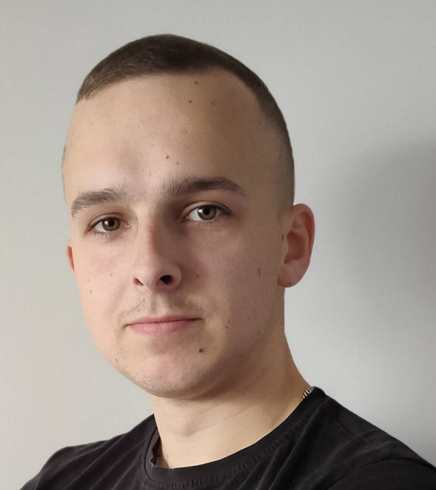

Tomasz Wryk

Summary
Hi, I am a conscientious and hard working person with a collaborative mindset
Education
- 09.2016 - 05.2020 Technical high school in the Stanisław Staszic school complex in Tarnobrzeg
Work Experience
- 01.2023 - to now | Material flow analyst | Hamilton Sundstrand Poland
- 04.2022 - 12.2022 | Operator assistant | TELTAR Kobielski i Sech Sp.J.
- 09.2021 - 03.2022 | Assistant in spare parts department | Jungheinrich Polska Sp. z. o.o.
- 08.2020 - 02.2021 | Trainee | Adam Wryk Firma Usługowo-Budowlana
Skills
- Fast learning
- Ease for making contacts
- Ability to work in a group and independently
- Responsibility
- Engagement
- Flexibility
Training, courses, certificates
- 07.2022 Forklift operator
- 05.2021 Lifeguard course
- 08.2020 Backhoe-loader
- 05.2019 Welder